Metodos para QSM
Este documento esta basado en el script 'script_newqsm_3TCIB' realizado por Carlos Milovic
Contents
1. Pasos Preliminares
Leer datos del archivo DICOM
A = dicomread('IM_0004'); iA = dicominfo('IM_0004'); % Acquisition paramaters sz = size(A); N = [sz(1) sz(2) sz(4)/4]; % Image size, for RMPI data ER = 5; % Number of echoes N(3) = N(3)/ER; voxel_size = [0.73 0.73 1]; % Old: [0.6 0.6 1], New: [0.73 0.73 1] B0 = 3; gyro = 2*pi*42.58; % Correct for Slope and Intercept perFrameFields = fieldnames(iA.PerFrameFunctionalGroupsSequence); for i=1:sz(4) slope = iA.PerFrameFunctionalGroupsSequence.(perFrameFields{i}).PixelValueTransformationSequence.Item_1.RescaleSlope; inter = iA.PerFrameFunctionalGroupsSequence.(perFrameFields{i}).PixelValueTransformationSequence.Item_1.RescaleIntercept; B(:,:,1,i) = double(A(:,:,1,i))*slope+inter; end % Sepparate magnitude, phase, real and imaginary data ImTot = squeeze(B(:,:,1,1:(sz(4)/4))); MagTot = squeeze(B(:,:,1,(sz(4)/4+1):(sz(4)/2))); PhTot = squeeze(B(:,:,1,(sz(4)/2+1):(3*sz(4)/4))); ReTot = squeeze(B(:,:,1,(3*sz(4)/4+1):sz(4))); % Read effective echo times TE = zeros(1, ER); for i=1:ER TE(i) = iA.PerFrameFunctionalGroupsSequence.(perFrameFields{i}).MREchoSequence.Item_1.EffectiveEchoTime; end % Magnitude and Phase containers. 4th dimension is echo. MV=zeros([N ER]); PV=zeros([N ER]); RV=zeros([N ER]); IV=zeros([N ER]); for i=1:N(3) for j = 1:ER MV(:,:,i,j)=MagTot(:,:,j+(i-1)*ER); PV(:,:,i,j)=PhTot(:,:,j+(i-1)*ER)/1000; RV(:,:,i,j)=ReTot(:,:,j+(i-1)*ER); IV(:,:,i,j)=ImTot(:,:,j+(i-1)*ER); end end CV = RV+1i*IV; PV2 = angle(CV); MV2 = abs(CV); clear A B CV i iA ImTot inter IV j MagTot perFrameFields PhTot ReTot RV slope sz;
Tenemos las matrices MV y PV, y las matrices MV2 y PV2, las primeras corresponden a las magnitudes y fase obtenidas directamente en el resonador, y las segundas corresponden a la magnitud y fase calculada a traves de la adquisicion de los datos reales e imaginarios.
Observaremos la diferencia en el primer echo
imagesc3d2(PV(:,:,:,1), N/2, 1, [90,90,0], [-3.14,3.14], 0, 'Phase 1 PV'); imagesc3d2(PV2(:,:,:,1), N/2, 2, [90,90,0], [-3.14,3.14], 0, 'Phase 1 PV2');
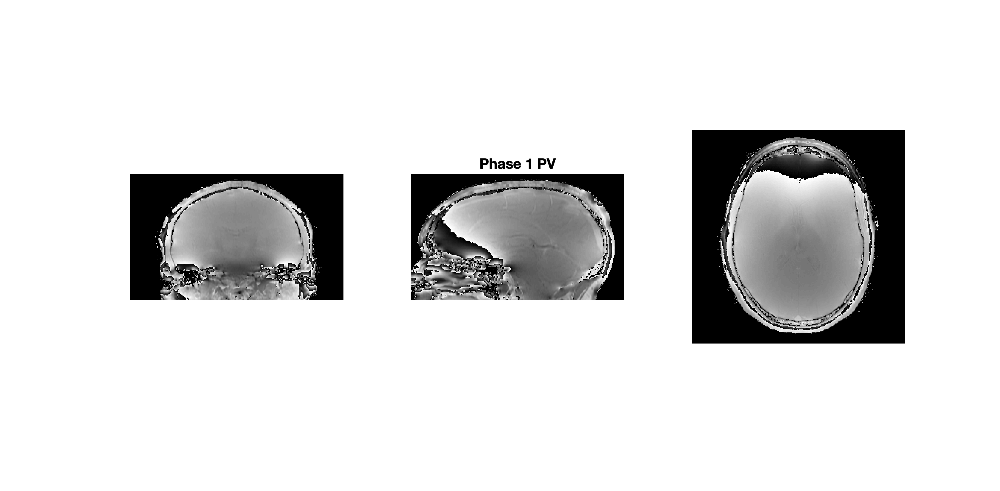
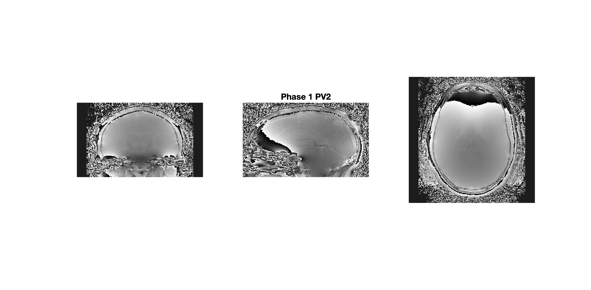
Reconstruccion R2s
Realizamos una reconstruccion R2s con el fin de obtener una buena imagen de magnitud.
% Nonlinear, TV regularized, reconstruction part2.input = (MV2-min(MV2(:)))/(max(MV2(:))-min(MV2(:))); % ideally in the 0-1 range part2.alpha1 = 1e-2; part2.mu1 = 25*part2.alpha1; part2.te = TE; %in ms outt2_tv = nlT2sTV(part2); imagesc3d2(outt2_tv.m0*3000, N/2, 3, [90,90,0], [0,1000], 0, 'nMag_0 (PD)');
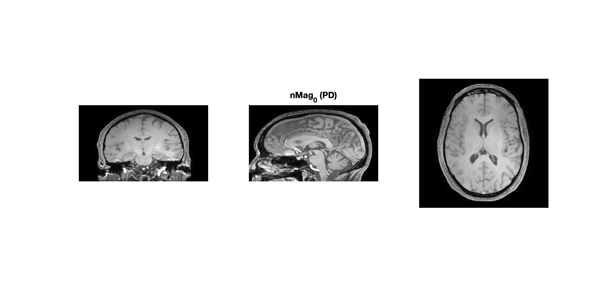
Creacion de la mascara
Para crear la mascara utilizamos la implementacion de BET2 del toolbox MEDI.
mask = BET(outt2_tv.m0, N, voxel_size);
imagesc3d2(mask, N/2, 4, [90,90,0], [0,1], 0, 'mask');
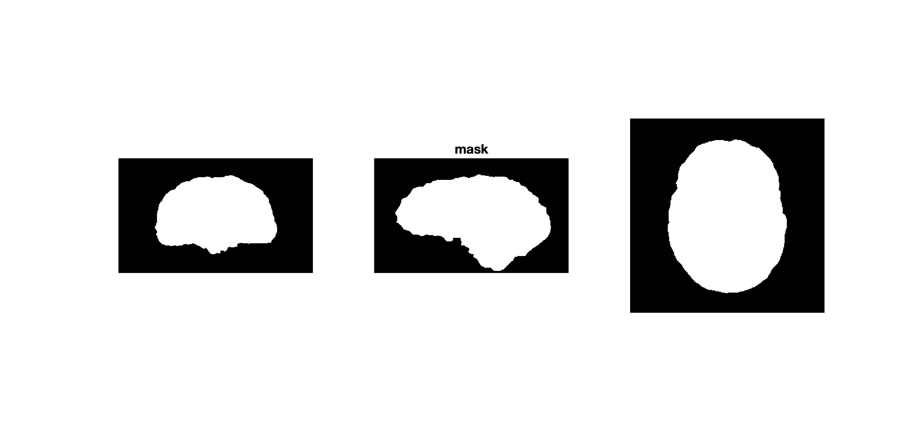
Definimos el kernel y valores de alpha para la inversion
kernel = dipole_kernel(N, voxel_size, 0); alpha = 10.^(-(1:30)/5-1);
2. Metodo 1: Complex Multiecho Combinarion
Este metodo consiste en combinar las fases de los 5 echos, y utilizar este resultado como una nueva fase y aplicarle el pipeline de QSM.
El diagrama de proceso de este metodo es el siguiente:
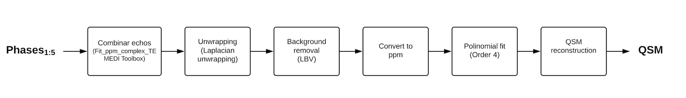
Combine echos using MEDI Toolbox
[p1, ~, ~, ~, ~] = Fit_ppm_complex_TE(MV.*exp(1i*PV), TE*1e-3); imagesc3d2(p1, N/2, 6, [90, 90, 0], [-3.14, 3.14], 0, 'p1'); [p1b, ~, ~, ~, ~] = Fit_ppm_complex_TE(MV2.*exp(1i*PV2), TE*1e-3); imagesc3d2(p1b, N/2, 7, [90, 90, 0], [-3.14, 3.14], 0, 'p1b'); imagesc3d2(angle(exp(1i*(p1-p1b))), N/2, 9, [90, 90, 0], [-0.03, 0.03], 0, 'phase_diff');
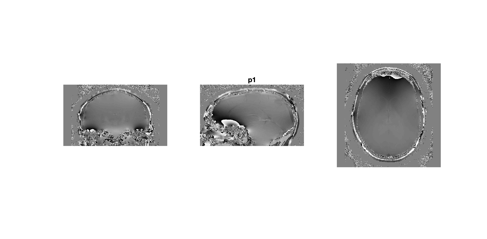
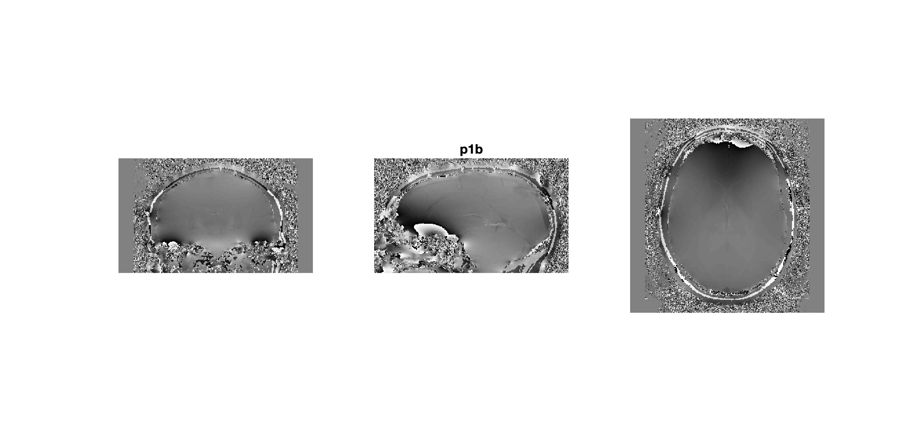
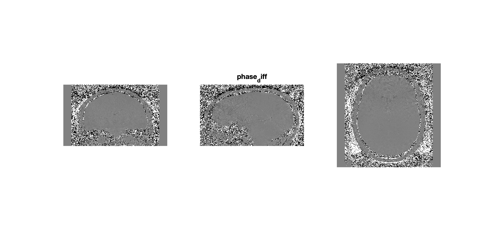
Laplacian unwrapping
p1unwL = unwrapLaplacian(p1, N, voxel_size); imagesc3d2(p1unwL .* mask - 10 * (~mask), N/2, 8, [90, 90, 0], [-3.14, 3.14], 0, 'unwrap p1'); p1unwLb = unwrapLaplacian(p1b, N, voxel_size); imagesc3d2(p1unwLb .* mask - 10 * (~mask), N/2, 9, [90, 90, 0], [-3.14, 3.14], 0, 'unwrap 1b');
Background removal
tol = 1e-2; % default depth = -1; % default peel = 5; p1LBV = LBV(p1unwL, mask, N, voxel_size, tol, depth, peel); imagesc3d2(p1LBV - 10 * (~mask), N/2, 10, [90, 90, 0], [-0.05,0.05], 0, 'p1 LBV'); p1LBVb = LBV(p1unwLb, mask, N, voxel_size, tol, depth, peel); imagesc3d2(p1LBVb - 10 * (~mask), N/2, 11, [90, 90, 0], [-0.05,0.05], 0, 'p1b LBV'); mask_p1 = p1LBV ~= 0; mask_p2 = p1LBVb ~= 0;
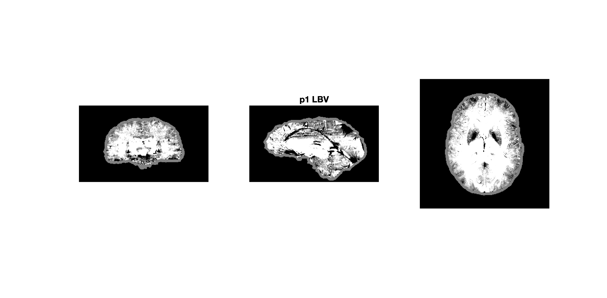
Converto to ppm
scale by TE, B0, and gyromagnetic ratio to convert to ppm
p1LBV = p1LBV / ((TE(2)-TE(1))*1e-3*B0*gyro); p1LBVb = p1LBVb / ((TE(2)-TE(1))*1e-3*B0*gyro); imagesc3d2(p1LBV - 10 * (~mask_p1), N/2, 12, [90, 90, 0], [-0.05,0.05], 0, 'p1 LBV normalized'); imagesc3d2(p1LBVb - 10 * (~mask_p2), N/2, 13, [90, 90, 0], [-0.05,0.05], 0, 'p1b LBV normalized');
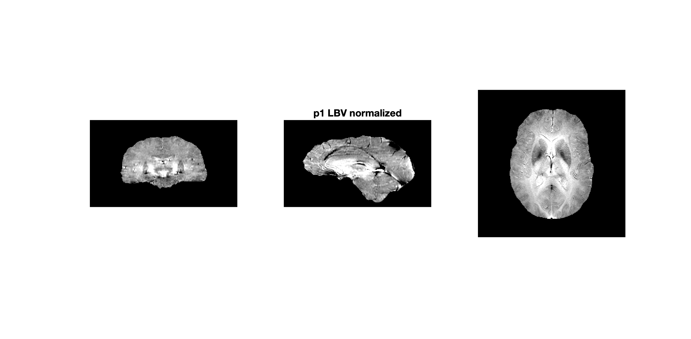
3D polyfit
Order = 4; % degree of 3d polyfit I_fitted = polyfit3D_NthOrder(p1LBV, mask_p1, Order); I_fittedb = polyfit3D_NthOrder(p1LBVb, mask_p2, Order); % subtract fitted phase p1LBV = p1LBV - I_fitted .* mask_p1; p1LBVb = p1LBVb - I_fittedb .* mask_p2; imagesc3d2(-p1LBV - 10 * (~mask_p1), N/2, 14, [90, 90, 0], [-0.05,0.05], 0, 'p1 LBV polyfit'); imagesc3d2(-p1LBVb - 10 * (~mask_p2), N/2, 15, [90, 90, 0], [-0.05,0.05], 0, 'p1b LBV polyfit');
Elapsed time is 20.213798 seconds. Elapsed time is 18.771919 seconds.
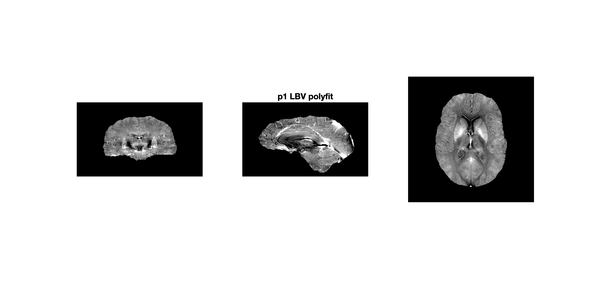
QSM reconstruction
params = []; params.K = kernel; params.maxOuterIter = 40; params.tol_update = 1; params.weight = min(10*outt2_tv.m0.*mask_p1,1.0); ka = 13; params.alpha1 = alpha(ka); params.mu1 = 10*alpha(ka); params.input = -p1LBV.*mask_p1; out_p1l = wTV(params); params.weight = min(10*outt2_tv.m0.*mask_p2,1.0); params.input = -p1LBVb.*mask_p2; out_p1lb = wTV(params); imagesc3d2(out_p1l.x - 10 * (~mask_p1), N/2, 16, [90,90,0], [-0.12,0.12], 0, 'QSM p1'); imagesc3d2(out_p1lb.x - 10 * (~mask_p2), N/2, 17, [90,90,0], [-0.12,0.12], 0, 'QSM p1b');
3. Metodo 2: Single Echo processing
Este metodo consiste en aplicar el pipeline de QSM a cada echo de forma independiente.
El diagrama del metodo es el siguiente:
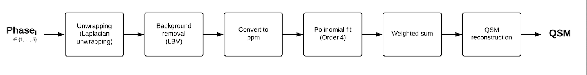
Unwrapping
unwr = zeros([N, 5]); unwr2 = zeros([N, 5]); im = 18; for i=1:5 unwr(:, :, :, i) = unwrapLaplacian(PV(:, :, :, i), N, voxel_size) .*mask; unwr2(:, :, :, i) = unwrapLaplacian(PV2(:, :, :, i), N, voxel_size) .* mask; imagesc3d2(unwr(:, :, :, i) - 10 * (~mask), N/2, im, [90, 90, 0], [-3.14, 3.14], 0, ['unwrap echo: ', num2str(i)]); im = im + 1; imagesc3d2(unwr2(:, :, :, i) - 10 * (~mask), N/2, im, [90, 90, 0], [-3.14, 3.14], 0, ['unwrap echo: ', num2str(i), ' b']); im = im + 1; end
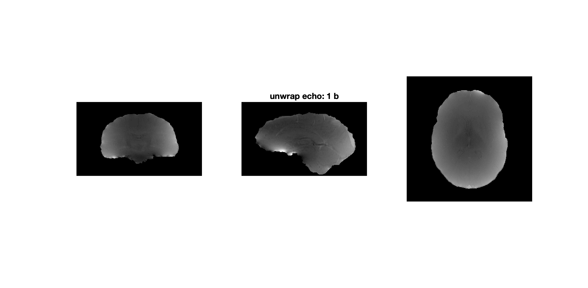
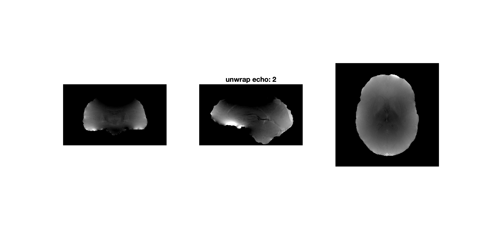
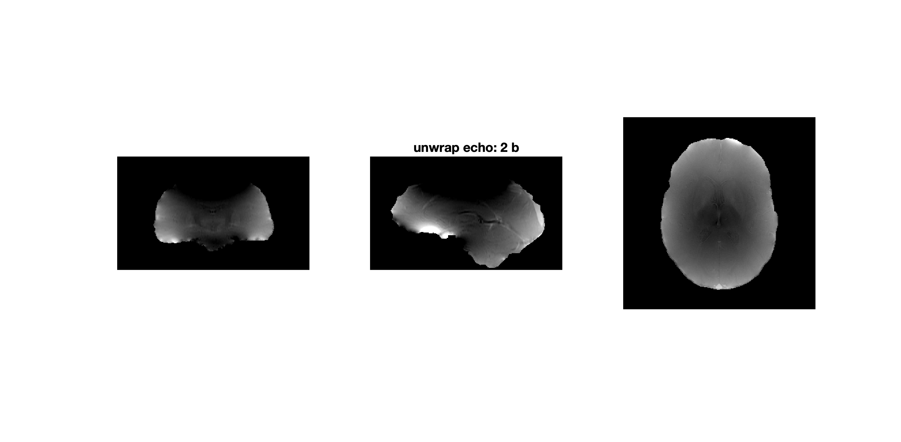
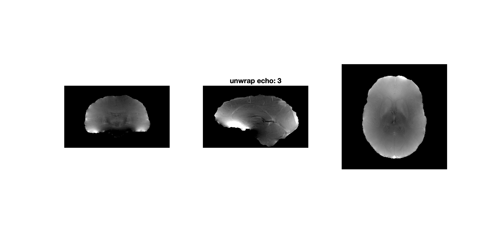
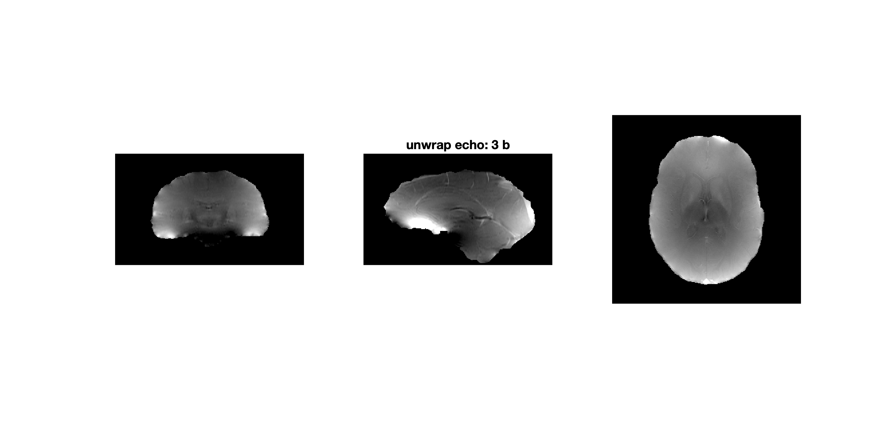
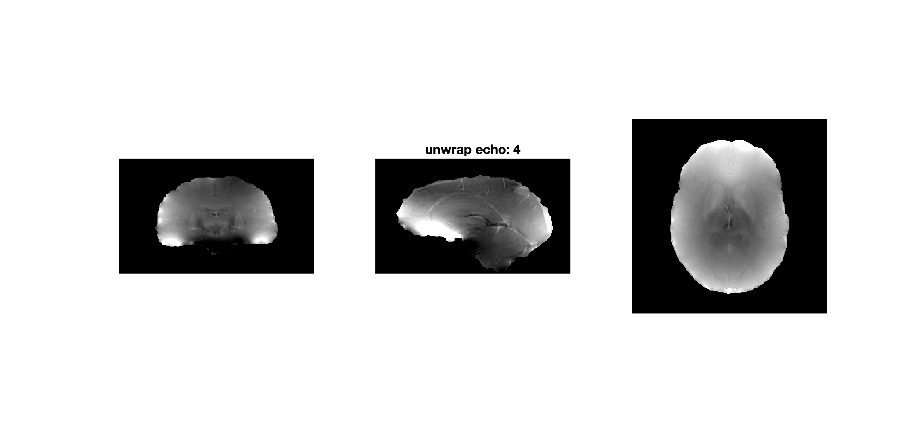
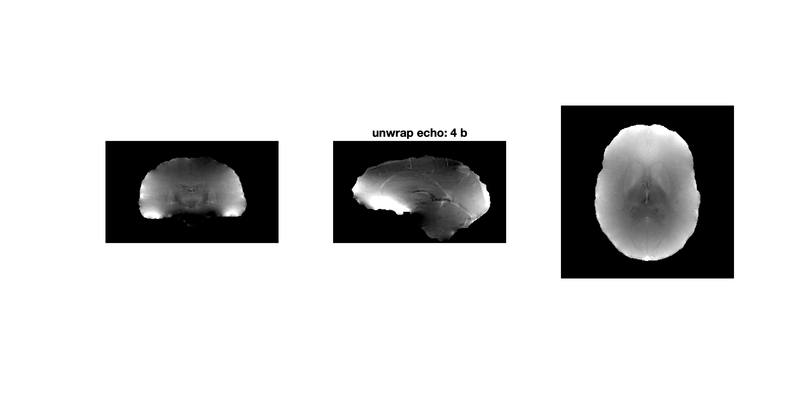
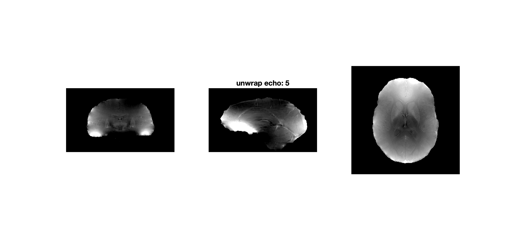
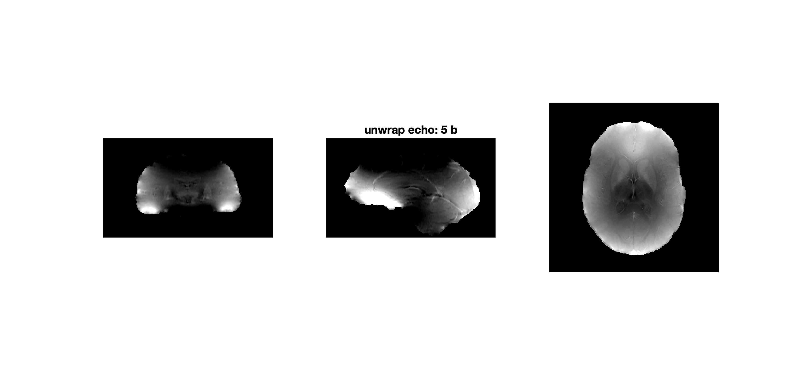
Background removal
tol = 1e-2; % default depth = -1; % default peel = 5; lbv = zeros([N, 5]); lbv2 = zeros([N, 5]); mask1 = zeros([N, 5]); mask2 = zeros([N, 5]); for i=1:5 lbv(:, :, :, i) = LBV(unwr(:, :, :, i), mask, N, voxel_size, tol, depth, peel); lbv2(:, :, :, i) = LBV(unwr2(:, :, :, i), mask, N, voxel_size, tol, depth, peel); mask1(:, :, :, i) = lbv(:, :, :, i) ~= 0; mask2(:, :, :, i) = lbv2(:, :, :, i) ~= 0; imagesc3d2(lbv(:, :, :, i) - 10 * (~mask1(:, :, :, i)), N/2, im, [90, 90, 0], [-1.12,1.12], 0, ['LBV echo: ', num2str(i)]); im = im + 1; imagesc3d2(lbv2(:, :, :, i) - 10 * (~mask2(:, :, :, i)), N/2, im, [90, 90, 0], [-1.12,1.12], 0, ['LBV echo: ', num2str(i), ' b']); im = im + 1; end
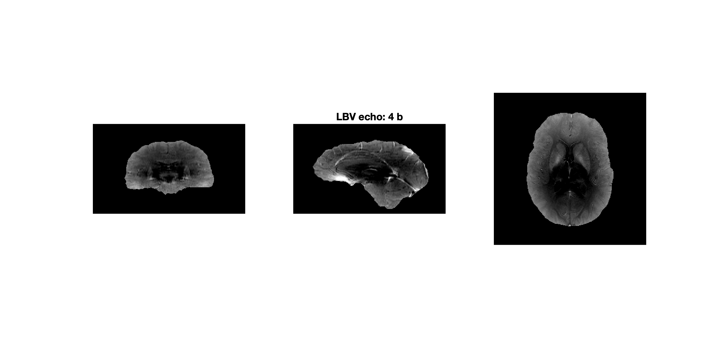
Converto to ppm
scale by TE, B0, and gyromagnetic ratio to convert to ppm
for i = 1:5 lbv(:, :, :, i) = lbv(:, :, :, i) / (TE(i)*1e-3*B0*gyro); lbv2(:, :, :, i) = lbv2(:, :, :, i) / (TE(i)*1e-3*B0*gyro); imagesc3d2(lbv(:, :, :, i) - 10 * (~mask1(:, :, :, i)), N/2, im, [90, 90, 0], [-0.05,0.05], 0, ['echo: ', num2str(i), ' LBV normalized']); im = im + 1; imagesc3d2(lbv2(:, :, :, i) - 10 * (~mask2(:, :, :, i)), N/2, im, [90, 90, 0], [-0.05,0.05], 0, ['echo: ', num2str(i), ' b LBV normalized']); im = im + 1; end
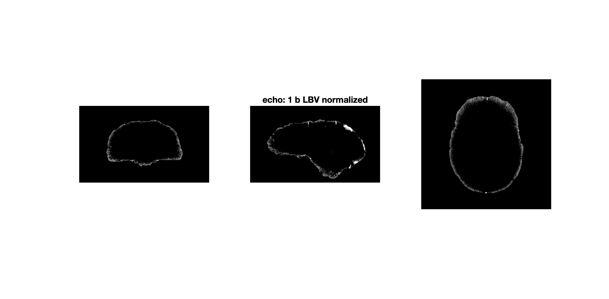
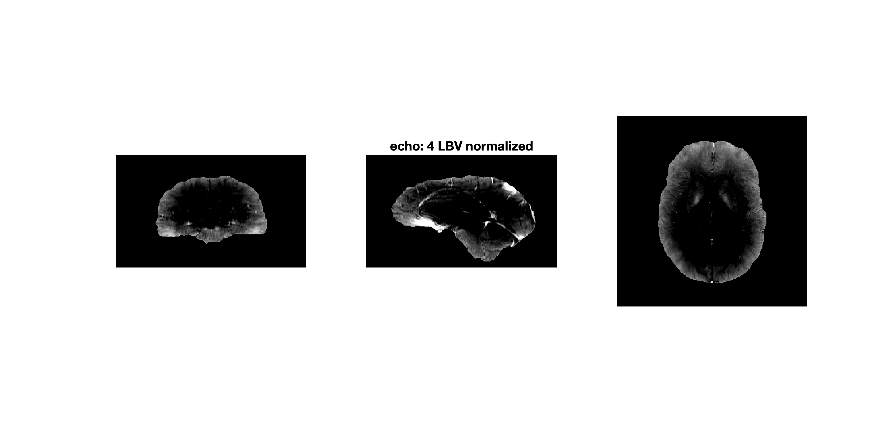
3D polyfit
Order = 4; % degree of 3d polyfit for i=1:5 I_fitted = polyfit3D_NthOrder(lbv(:, :, :, i), mask1(:, :, :, i), Order); I_fittedb = polyfit3D_NthOrder(lbv2(:, :, :, i), mask2(:, :, :, i), Order); % subtract fitted phase lbv(:, :, :, i) = lbv(:, :, :, i) - I_fitted .* mask1(:, :, :, i); lbv2(:, :, :, i) = lbv2(:, :, :, i) - I_fittedb .* mask2(:, :, :, i); imagesc3d2(lbv(:, :, :, i) - 10 * (~mask1(:, :, :, i)), N/2, im, [90, 90, 0], [-0.05,0.05], 0, ['echo: ', num2str(i), ' LBV polyfit']); im = im + 1; imagesc3d2(lbv2(:, :, :, i) - 10 * (~mask2(:, :, :, i)), N/2, im, [90, 90, 0], [-0.05,0.05], 0, ['echo: ', num2str(i), ' b LBV polyfit']); im = im + 1; end
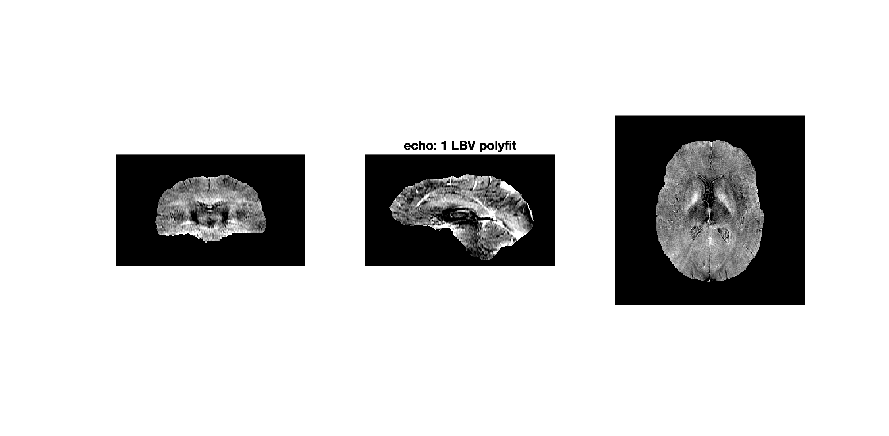
QSM reconstruction
params = []; params.K = kernel; params.maxOuterIter = 40; params.tol_update = 1; ka = 13; params.alpha1 = alpha(ka); params.mu1 = 10*alpha(ka); for i=1:5 params.weight = min(10*outt2_tv.m0.*mask1(:, :, :, i),1.0); params.input = lbv(:, :, :, i) .* mask1(:, :, :, i); out_p1l = wTV(params); params.weight = min(10*outt2_tv.m0.*mask2(:, :, :, i),1.0); params.input = lbv2(:, :, :, i).*mask2(:, :, :, i); out_p1lb = wTV(params); imagesc3d2(out_p1l.x - 10 * (~mask1(:, :, :, i)), N/2, im, [90,90,0], [-0.12,0.12], 0, ['QSM echo: ', num2str(i)]); im = im + 1; imagesc3d2(out_p1lb.x - 10 * (~mask2(:, :, :, i)), N/2, im, [90,90,0], [-0.12,0.12], 0, ['QSM echo: ', num2str(i), ' b']); im = im + 1; end
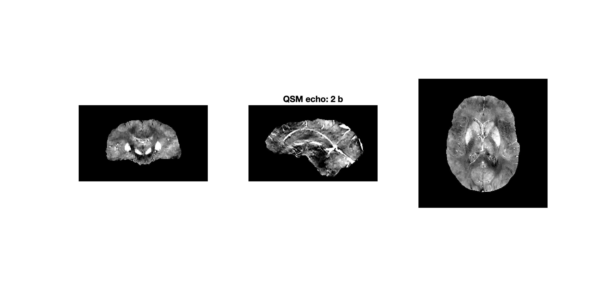
4. Metodo 3: Multi Echo processing
Este metodo consiste en procesar las 5 fases por separado hasta el ajuste polinomial previo a la inversion(QSM), y hacer una suma ponderada, por la magnitud de cada echo.
El diagrama de este metodo es el siguiente:
Weighted sum
Como el pipeline es similar al metodo anterior se utilizaran los datos ya calculados para realizar la suma ponderada y la posterior inversion.
numerador = zeros(N); denominador = zeros(N); numerador2 = zeros(N); denominador2 = zeros(N); for i=1:5 numerador = numerador + lbv(:, :, :, i) .* MV(:, :, :, i) * TE(i); numerador2 = numerador2 + lbv2(:, :, :, i) .* MV2(:, :, :, i) * TE(i); denominador = denominador + MV(:, :, :, i) * TE(i); denominador2 = denominador2 + MV2(:, :, :, i) * TE(i); end wsum = numerador./ (denominador+eps); wsum2 = numerador2 ./ (denominador2+eps); imagesc3d2(wsum - 10 * (~mask1(:, :, :, 1)), N/2, im, [90, 90, 0], [-0.05,0.05], 0, 'Weighted sum'); im = im + 1; imagesc3d2(wsum2 - 10 * (~mask2(:, :, :, 1)), N/2, im, [90, 90, 0], [-0.05,0.05], 0, 'Weighted sum b'); im = im + 1;
QSM reconstruction
params = []; params.K = kernel; params.maxOuterIter = 40; params.tol_update = 1; ka = 13; params.alpha1 = alpha(ka); params.mu1 = 10*alpha(ka); params.weight = min(10*outt2_tv.m0.*mask1(:, :, :, 1),1.0); params.input = wsum .* mask1(:, :, :, 1); out_p1l = wTV(params); params.weight =min(10*outt2_tv.m0.*mask2(:, :, :, 1),1.0); params.input = wsum2.*mask2(:, :, :, 1); out_p1lb = wTV(params); imagesc3d2(out_p1l.x - 10 * (~mask1(:, :, :, 1)), N/2, im, [90,90,0], [-0.12,0.12], 0, 'QSM wsum'); im = im + 1; imagesc3d2(out_p1lb.x - 10 * (~mask2(:, :, :, 1)), N/2, im, [90,90,0], [-0.12,0.12], 0, 'QSM wsumb'); im = im + 1;
5. Metodo 4: Regularized Multi Echo combination
Este metodo consiste en resolver la ecuacion:
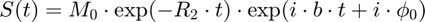
Ecuacion que describe la evolucion de la se?al en el tiempo, para encontrar la ecuacion se utiliza la funcion 'nlmeL2', este solver hay que alimentarlo con una solucion inicial que estimamos utilizando dos echos.
El diagrama de este metodo es el siguiente:
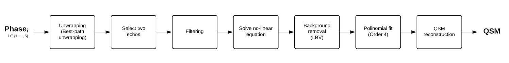
Best Path unwrapping - MEDI Toolbox
for i=1:ER [unwb(:,:,:,i)] = unwrapPhase(MV2(:,:,:,i), PV2(:,:,:,i), N); end
Select two echos - First estimation based on direct calculation
echo1 = 3; echo2 = 5; thetai = (TE(echo1)*unwb(:,:,:,echo2)-TE(echo2)*unwb(:,:,:,echo1))/(TE(echo1)-TE(echo2)); bi = (unwb(:,:,:,echo2)-unwb(:,:,:,echo1))/(TE(echo2)-TE(echo1)); imagesc3d2((thetai), N/2, im, [90,90,0], [-1*3.14,1*3.14], 0, 'thetai'); im = im + 1; imagesc3d2(bi*(TE(5)-TE(4)).*mask, N/2, im, [90,90,0], [-1*3.14,1*3.14], 0, 'bi'); im = im + 1;
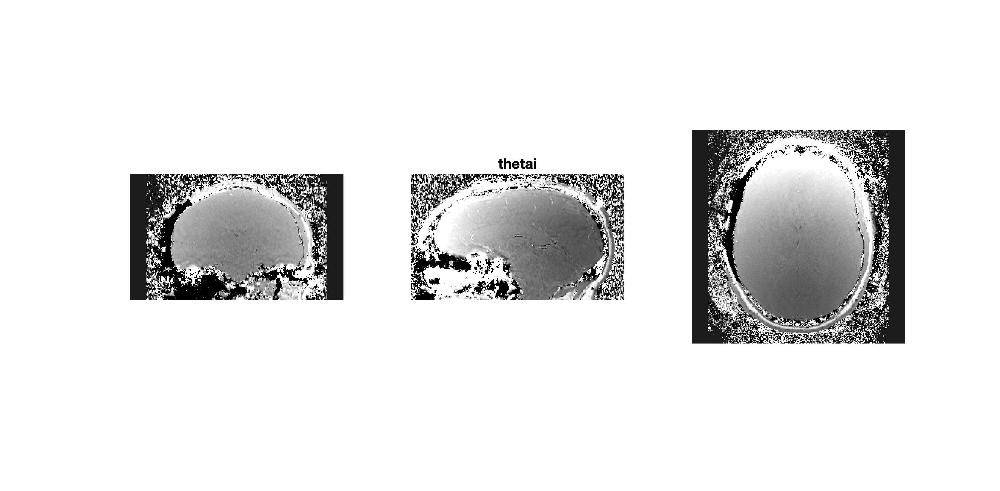
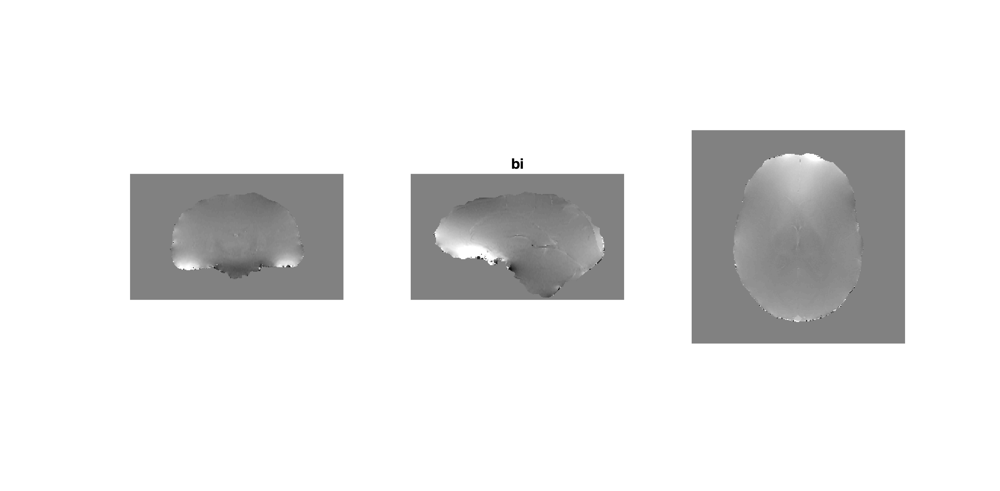
Filtering
upt = 4; dnt = -4; % Correct estimations due to wrapping errors bc = bi*(TE(echo2)-TE(echo1)); bc(thetai>upt)=bc(thetai>upt)+2*pi; bc(thetai<dnt)=bc(thetai<dnt)-2*pi; bc = bc/(TE(echo2)-TE(echo1)); imagesc3d2(bc*(TE(echo2)-TE(echo1)).*mask, N/2, im, [90,90,0], [-4*3.14,4*3.14], 0, 'bc'); im = im + 1; thetac = thetai; thetac(thetai<dnt)=thetac(thetai<dnt)+2*pi*TE(echo1)/(TE(echo2)-TE(echo1)); thetac(thetai>upt)=thetac(thetai>upt)-2*pi*TE(echo1)/(TE(echo2)-TE(echo1)); imagesc3d2((thetac).*mask, N/2, im, [90,90,0], [-1*3.14,1*3.14], 0, 'thetac'); im = im + 1; % Filter results to reduce errors for z=1:N(3) mbc(:,:,z) = medfilt2( medfilt2(bc(:,:,z)) ); mt0(:,:,z) = medfilt2( medfilt2(thetac(:,:,z)) ); end imagesc3d2(mbc*(TE(echo2)-TE(echo1)), N/2, im, [90,90,0], [-1*3.14,1*3.14], 0, 'mbc'); im = im + 1; imagesc3d2((mt0).*mask, N/2, im, [90,90,0], [-1*3.14,1*3.14], 0, 'mt0'); im = im + 1;
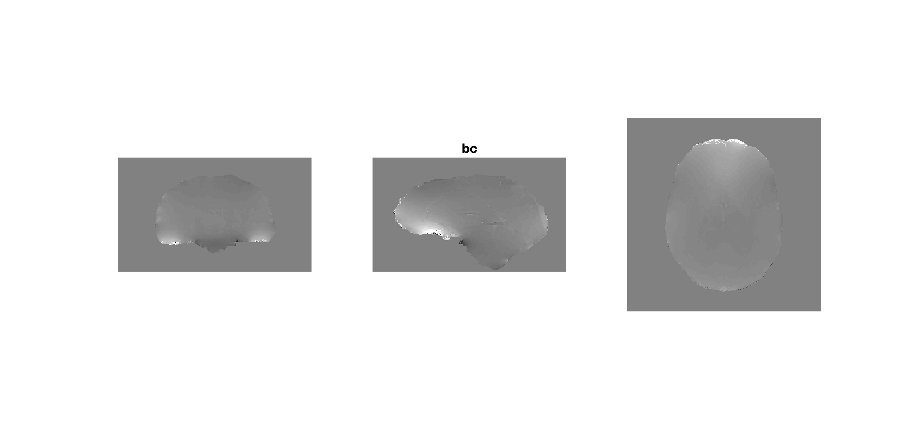
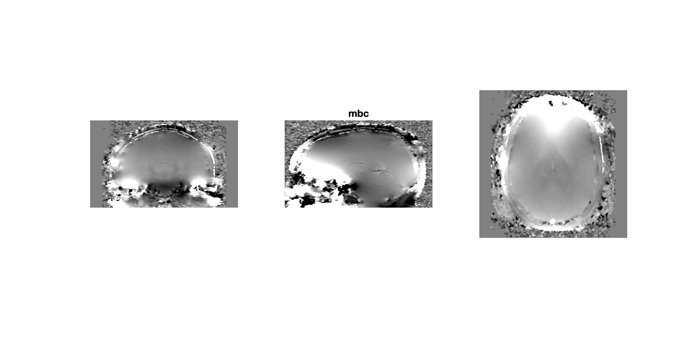
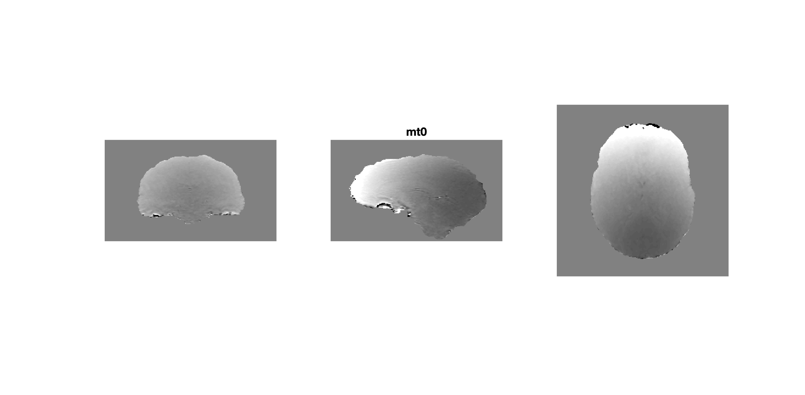
Solve nonlinear equation
for i=1:ER W(:,:,:,i) = MV2(:,:,:,i)*TE(i); end W = W/max(W(:)); params2 = []; params2.input = PV2; params2.weight = W; params2.lambda = 3e-2; % no regularization params2.mu = 1e0; params2.b0 = mbc; params2.theta0 = mt0; params2.TE = TE; params2.tol_update = .1; params2.maxOuterIter = 500; outcb = nlmeL2(params2); imagesc3d2(outcb.theta.*mask, N/2, im, [90,90,0], [-1*3.14,1*3.14], 0, 'thetac'); im = im + 1; imagesc3d2(outcb.b*(TE(ER)).*mask, N/2, im, [90,90,0], [-10*3.14,10*3.14], 0, 'bc'); im = im + 1;
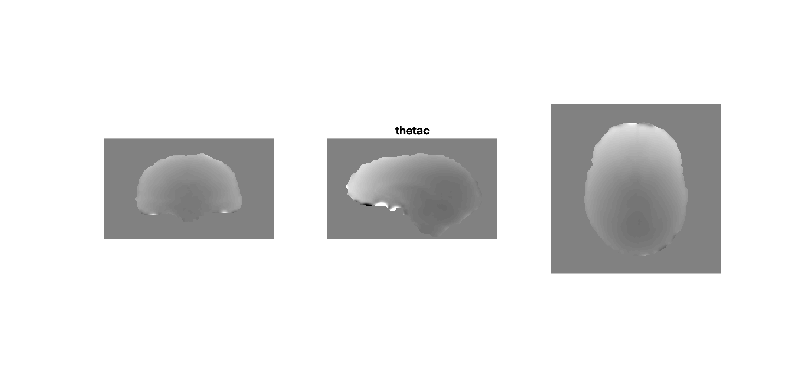
Background removal
tol = 1e-2; % default depth = -1; % default peel = 5; nmeLBVb = LBV(outcb.b,mask,N,voxel_size, tol, depth, peel); mask_m4 = nmeLBVb ~= 0; imagesc3d2(nmeLBVb - 10 * ~mask_m4, N/2, im, [90,90,0], [-0.12,0.12], 0, 'p1LBV-B'); im = im + 1;
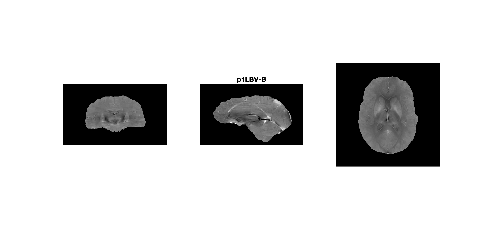
Polinomial fit
Order = 4;
I_fitted = polyfit3D_NthOrder(nmeLBVb, mask_m4, Order);
nmeLBVb = nmeLBVb - I_fitted .* mask_m4;
imagesc3d2(nmeLBVb*TE(ER) - 10 * ~mask_m4, N/2, im, [90,90,0], [-1.12,1.12], 0, 'nmeB');
im = im + 1;
QSM reconstruction
params = [];
params.K = kernel;
params.maxOuterIter = 40;
params.tol_update = 1;
params.weight = min(10*outt2_tv.m0.*mask_m4,1.0);
ka = 16;
params.alpha1 = alpha(ka);
params.mu1 = 10*alpha(ka);
params.input = nmeLBVb.*mask_m4/(1e-3 * gyro * B0);
out_nmeb = wTV(params);
imagesc3d2(out_nmeb.x, N/2, im, [90,90,0], [-0.12,0.12], 0, 'chi-nmeB');
im = im + 1;
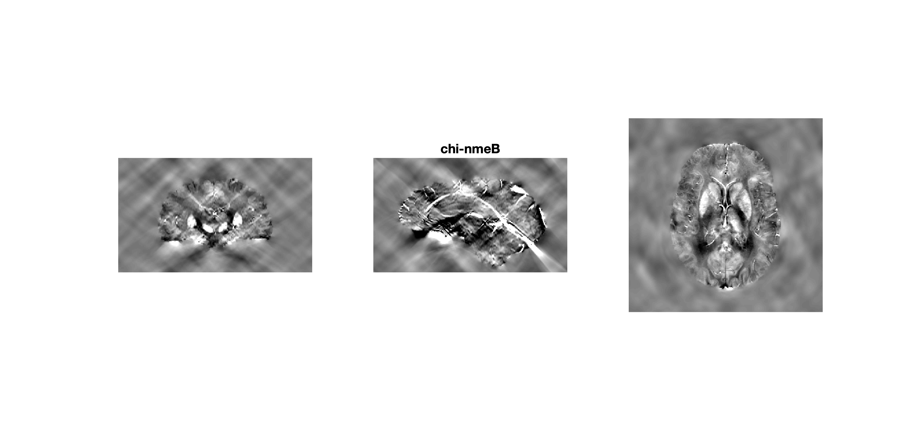
6. Ejemplo de Curva L
params = []; params.input = wsum.*mask1(:,:,:,1); params.K = kernel; params.maxOuterIter = 40; params.tol_update = 1; params.weight = min(10*outt2_tv.m0.*mask1(:,:,:,1),1.0); % params.weight = ones(N); dcw = zeros(30); rcw = zeros(30); for ka=1:30 params.alpha1 = alpha(ka); params.mu1 = 10*alpha(ka); out = wTV(params); [ data_cost, reg_cost ] = compute_costs(out.x.*mask1(:,:,:,1), params.input.*mask1(:,:,:,1), kernel); dcw(ka) = data_cost; rcw(ka) = reg_cost; clc; end figure; plot(dcw, rcw, 'o-'); hold on; for i=1:30 text(dcw(i), rcw(i), num2str(i)); end
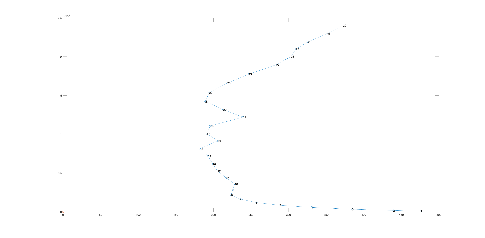